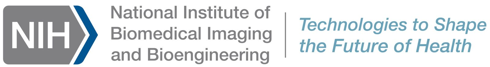
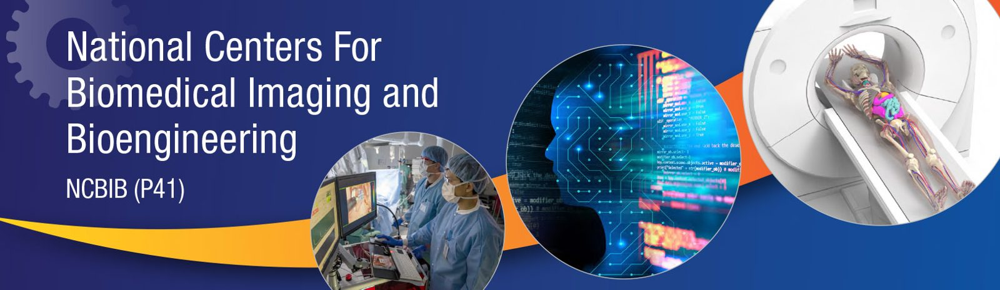

The Ferenc Jolesz National Center for Advanced Technologies for Image Guided Therapy
The National Center for Advanced Technologies for Image Guided Therapy (AT-NCIGT), located at Brigham and Women’s Hospital and Harvard Medical School in Boston, is a Biomedical Technology Resource Center of the National Institute of Biomedical Imaging and Bioengineering. Under Dr. Clare Tempany’s leadership, AT-NCIGT serves as a national resource for all aspects of research into medical procedures enhanced by imaging, with the common goal of providing more effective patient care. The Advanced Multimodal Image-Guided Operating (AMIGO) suite is the clinical translational test-bed for research in AT-NCIGT. A unique resource for image-guided therapy, AMIGO represents and encourages multidisciplinary cooperation and collaboration among imaging physicists, chemists, computer scientists, mechanical engineers, roboticists, biomedical engineers, nurses and technologists to reach the common goal of delivering the safest and the most effective state-of-the-art therapy to patients in a technologically advanced and patient-friendly environment.
The grants that support AT-NCIGT are P41EB015898 and P41EB028741.
OUR SPONSOR


RECENT NEWS
Carl-Fredrik Westin Speaks at the 5th High Performance Neuroimaging Symposium in Iowa City
Carl-Fredrik Westin, PhD, an investigator at the National Center for Image Guided Therapy (NCIGT), was an invited speaker at the 5th High Performance Neuroimaging Symposium, held November 9–10, 2026 at…
Read moreAACR 2026: Advancing Intratumoral Drug Response Measurement
We are pleased to highlight our contribution to the American Association for Cancer Research Annual Meeting 2026, where emerging technologies for understanding tumor biology and therapeutic response took center stage.…
Read moreISMR 2026 Workshop: Advancing In Silico Medical Robotics with SlicerROS2
We are excited to contribute to ISMR 2026 with a hands-on workshop focused on the future of medical robotics development—in silico. 📍 April 22, 2026 | University of Tennessee🕘 Half-day…
Read moreContent carried over from https://ncigt.org/.